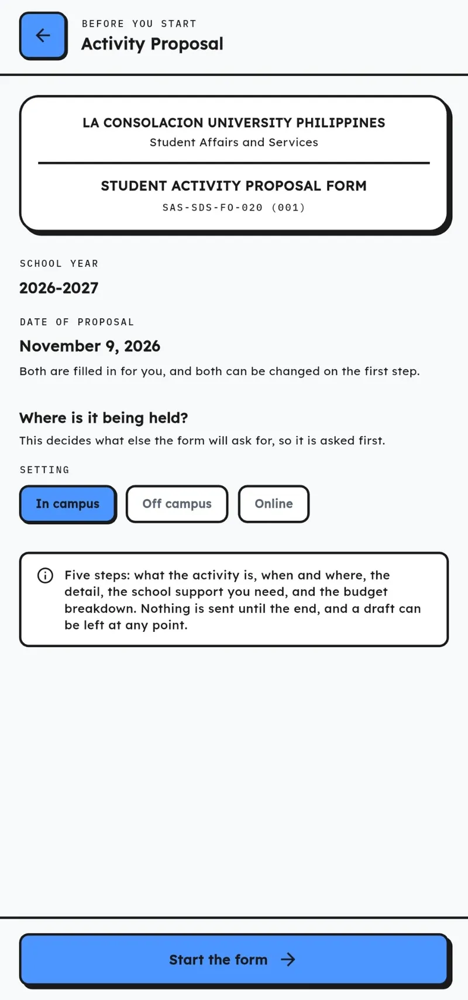
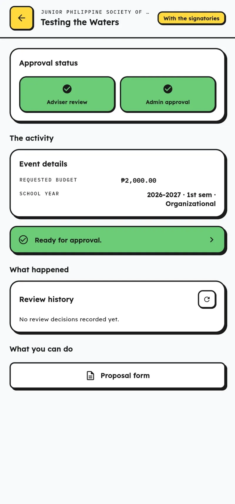
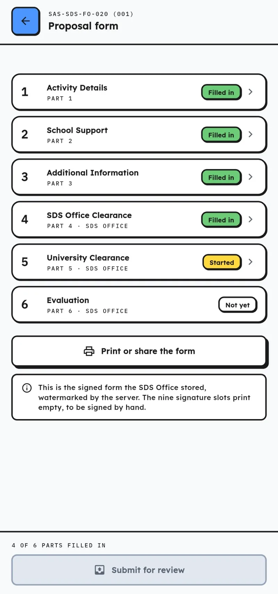
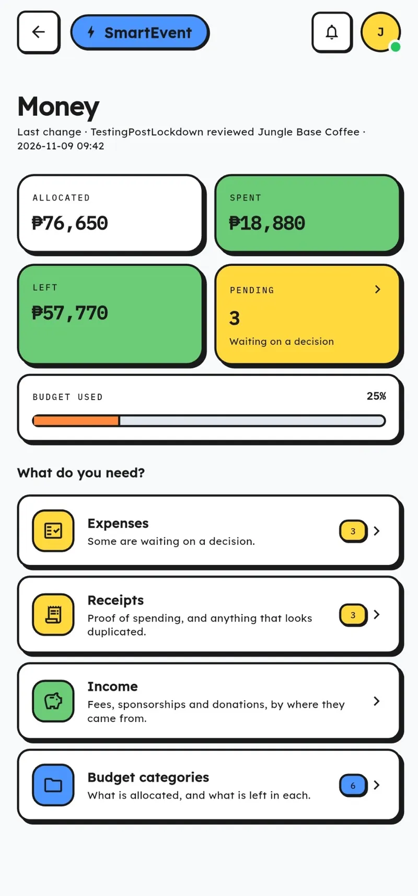
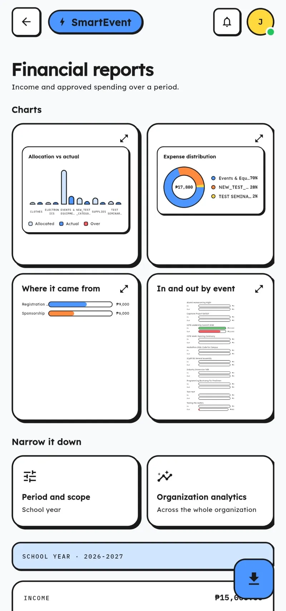
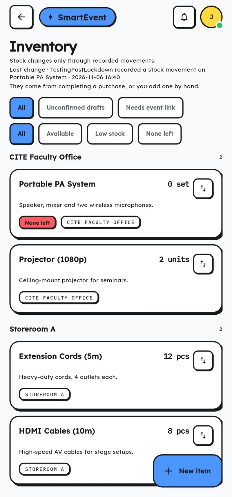

Overview
SmartEvent is a mobile app for student organizations at La Consolacion University Philippines. It covers the whole life of a campus event: proposals and multi-step approvals, budgets and expenses with receipt scanning, event-linked inventory, and financial reports. It replaces the spreadsheet-based tracking organizations used before, with automatic expense deductions and low-balance alerts.
As Lead Developer I focused on the backend: a FastAPI REST API on Supabase PostgreSQL, role-based access for seven roles scoped by department and organization, and integrations for receipt OCR (Gemini), file storage and email (Resend). The backend is covered by 200 automated tests.
- Role
- Lead Developer — Backend
- Type
- Capstone project, CITE, 2026
- Platform
- Mobile (Flutter)
- Mobile
- Backend
- Data & services
Snapshots
Real screens from the app. Tap any phone to enlarge.
01DashboardEvents, budget left, pending reviews and low stock at a glance. 
02Start a proposalThe university's activity proposal form, digitized: in campus, off campus or online. 
03Approval statusAdviser, admin, then signatories, with the review history kept. 
04Proposal formSix parts tracked from "Filled in" to "Not yet", printable for signing. 
05MoneyAllocated, spent, left and pending, plus expenses, receipts and income. 
06Financial reportsAllocation vs actual, expense distribution and where the money came from. 
07InventoryStock by location, changed only through recorded movements.


Key features
Event approvals
SmartEvent digitalizes Student Activity Proposals that can generate a digital trail as well as from filling out forms digitally to have a ready to print generated pdf file. Proposals move through adviser, admin and institutional signatories in order. Nobody can approve their own request, and rejected proposals can be fixed and resubmitted with their history kept.
Finance & receipts
Treasurers log expenses and income against category and event budgets. Receipts are scanned with Gemini OCR and checked for duplicates before review.
Inventory & reports
Event-linked stock with a full movement ledger, plus weekly, semester and school-year financial reports exported as PDF, CSV or HTML.
Like what you see?
Want something like this built, or want to talk about how it works?